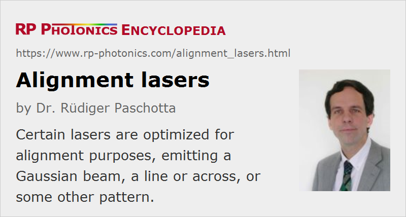

Alignment Lasers
Definition: lasers used for alignment purposes
German: Justierlaser
How to cite the article; suggest additional literature
Author: Dr. Rüdiger Paschotta
There are laser devices which are optimized for alignment purposes. Typically, such a device contains a visible laser with a low or moderate output power and high beam quality. For example, it may be a red or blue laser diode or a green frequency-doubled diode-pumped solid-state laser.
Output Beam Shapes, Spot Size and Beam Divergence
Alignment lasers can have different shapes of the output beam. The most common ones are the following:
- Spot lasers (or dot lasers) are used for marking a single spot.
- Line lasers emit beams which are substantially elongated in one direction, projecting narrow straight lines. Here, the opening angle is an additional important parameter.
- Cross lasers (or cross-hair lasers) produce two perpendicular lines.
Other configurations are also available, for example for projecting two or more parallel lines or patterns of spots (generated e.g. with some diffractive optics). Some suppliers offer a wide selection of projection patterns.
A spot laser usually emits a collimated Gaussian beam, exhibiting the minimum possible (diffraction-limited) beam divergence, which depends on the wavelength and the beam radius. For applications involving small distances, one may prefer a device with small beam radius, where however the Rayleigh length (the distance from the focus where the beam area doubles) is relatively short. For example, a beam radius of 0.5 mm and the wavelength of 635 nm result in a Rayleigh length of only 1.24 m. By increasing the beam radius to 3 mm, one can increase the Rayleigh length to 44.5 m.
Usually, the output beam will be approximately collimated, having approximately flat wavefronts at the laser output. Some devices have an adjustment knob for the focusing, so that one may e.g. place the beam focus at some distance from the laser, and thus achieve a somewhat longer range within which the beam radius is approximately constant.
Ordinary edge-emitting laser diodes have strongly asymmetric outputs, and the formation of a symmetric output beam with high beam quality is not trivial. Therefore, low-cost alignment lasers may exhibit some imperfections of the beam profile. There are solutions based on vertical-cavity surface-emitting lasers (VCSELs), which naturally emit a high-quality circular beam.
For cross and line lasers, or for other patterns, there is of course the inherent problem that the feature sizes increase with increasing distance according to the opening angle of the source. Frequently, however, such alignment devices are anyway only used for more or less fixed working distances.
Applications of Alignment Lasers
Some examples for typical applications of alignment lasers in industry and by the military:
- A spot laser can mark a spot on a workpiece where a laser drilling machine is about to drill a hole, or a laser marking machine will produce some pattern. For that purpose, a visible alignment beam must be precisely aligned with the processing beam.
- Similar devices are used for military purposes, e.g. supporting the targeting with guns.
- An infrared free-space optical communications system may require initial alignment with a visible laser beam.
- Spot lasers can be used to align machinery, e.g. concerning the position of a rotation axis.
- In conjunction with a position-sensitive detector, tiny movements of a device can be monitored accurately.
- When building an infrared bulk laser or an optical parametric oscillator, a visible alignment laser may help substantially to find the initial approximate alignment of the laser resonator.
- A line laser may indicate where a textile machine will cut the fabric, where a saw will hit some piece of wood, etc.
- Cross lasers can also be used to indicate perpendicular directions, e.g. for cutting out rectangular pieces.
Output Powers
Many alignment lasers have relatively low optical powers of the order of 1 mW or less, possibly falling into the lowest laser safety class 1. However, other devices are available which emit much higher powers, e.g. hundreds of milliwatts. In that case, a beam directly hitting a human eye must be considered as dangerous, and the laser must be used accordingly.
Laser Wavelength and Bandwidth
Many alignment lasers have a red output, simply because red laser diodes are available with good performance at low prices. Note, however, that the sensitivity of the human eye drops sharply for longer wavelengths. Therefore, a laser a emitting at 670 nm, for example, will have a much lower visibility than one at 635 nm. Both are clearly inferior to a green laser e.g. at 532 nm. This aspect can be important e.g. when the alignment spot needs to be seen despite of bright ambient light and/or if the laser power is strongly limited, e.g. due to laser safety considerations.
Visibility of the alignment beam may not be the only concern. For example, if an alignment beam needs to be superimposed with some other laser beam and sent through some optical system, certain wavelengths may be inappropriate due to problems with dielectric coatings or with chromatic aberrations.
There are also infrared alignment lasers, e.g. used in conjunction with night vision devices by the military, or for aligning laser resonators.
The emission bandwidth (linewidth) of an alignment laser is relevant for its tendency to produce disturbing speckle patterns. Unfortunately, many alignment lasers have a pretty small bandwidth, leading to strong speckle effects on some materials. Also, one may get strong interference effects e.g. when sending the beam through a glass plate.
Stability of Beam Direction
Usually, one should expect an alignment laser to have a rather stable beam position, i.e., with low beam pointing fluctuations and with no significant change of beam direction caused by some amount of mechanical shock. However, many suppliers do not provide specifications for such properties, despite their potential importance in some applications.
Note that due to the typically rather small focal length of the used collimating optics, even very tiny displacements of the collimating lens with respect to the laser diode output can result in significant changes of the beam direction. Such displacements might be caused by thermal expansion effects or by mechanical shock, for example. Therefore, a proper mechanical design can be essential for output beam stability.
Laser Housings
For an alignment laser, the housing may not only have functions like protecting the actual laser and fixing it, but also to get a reference for the beam direction, or align the beam with certain mechanical parts. Therefore, some alignment laser modules are available where the beam direction is precisely aligned with some feature of the housing – for example, with the rotation axis of a cylindrical housing. For other devices, there is no such well defined direction, and often it is not needed, e.g. because the beam will anyway be aligned with other means.
Some compact alignment lasers have a housing of approximately cylindrical shape, which can be mounted on a flat plate with a thread. Others have the shape of a cuboid. Rigid housings, e.g. made of stainless steel, can of course be mounted with higher precision and stability than a cheap housing based on a thermoplastic material. With appropriate mechanical parts, an alignment laser may also be fixed on an optical rail system.
For operation under harsh conditions, devices may have a water-proof housing, which can also not be penetrated by dust. However, the optical window may still be affected by dirt, degrading the beam quality.
Additional Features
Temporarily used alignment lasers may be operated with batteries (possibly rechargeable ones). Others are powered via some power supply – typically with a moderate DC voltage.
Many alignment lasers emit continuously while being powered, but some have a TTL input, for example, for switching the light output on and off. In some cases, the output power can be adjusted.
Suppliers
The RP Photonics Buyer's Guide contains 27 suppliers for alignment lasers. Among them:
Questions and Comments from Users
Here you can submit questions and comments. As far as they get accepted by the author, they will appear above this paragraph together with the author’s answer. The author will decide on acceptance based on certain criteria. Essentially, the issue must be of sufficiently broad interest.
Please do not enter personal data here; we would otherwise delete it soon. (See also our privacy declaration.) If you wish to receive personal feedback or consultancy from the author, please contact him e.g. via e-mail.
By submitting the information, you give your consent to the potential publication of your inputs on our website according to our rules. (If you later retract your consent, we will delete those inputs.) As your inputs are first reviewed by the author, they may be published with some delay.
See also: laser pointers, visible lasers, laser safety, laser speckle
and other articles in the category lasers
|  |
If you like this page, please share the link with your friends and colleagues, e.g. via social media:
These sharing buttons are implemented in a privacy-friendly way!